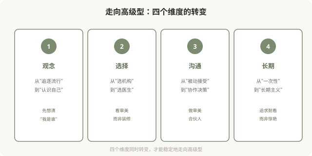
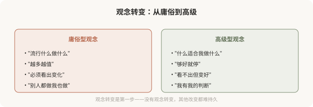
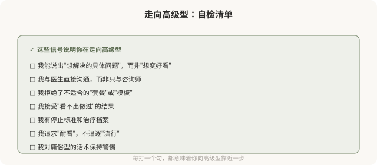

先说结论：从庸俗型走向高级型，是一种可实践的审美升级，它不需要花更多钱、用更贵产品，而需要观念转变和选择改变。核心是从“追逐流行/达标/越多越好”转向“尊重个体/协调/克制”。这一篇是系列的收尾，把前面 9 篇的内容整合成一份实践指南，观念、选择、沟通、长期，四个维度帮你走向高级型。
走向高级型的四个维度

维度一，观念转变

几个关键的观念自问：
- 我追求的，是我真正喜欢的，还是被种草的？
- 我能否接受“看不出做过”的结果？
- 我有没有自己的审美判断，还是随波逐流？
- 我把医美当“一次性消费”还是“长期管理”？
维度二，选择转变
从“选机构”转向“选医生”：
- 看医生的资质、经验、审美观，而非机构的装修和规模。
- 看医生是否主导决策，而非咨询师主导。
- 看医生是否愿意与你深入沟通，而非快节奏操作。
- 看医生的案例是否多元（而非千篇一律的模板脸）。
识别高级型医生的信号：
- 他先评估你的整体，而非直接推荐项目。
- 他会劝你“少做”或不做不适合的项目。
- 他谈“协调”“比例”“你的特征”，而非“最新”“最饱满”。
- 他给你冷静期，不催促当场决定。
- 他讨论风险和替代方案。
维度三，沟通转变
从“被动接受”转向“协作决策”（详见第 03 篇）：
- 面诊前梳理具体诉求，不是“想变好看”。
- 带着问题清单去，主动提问。
- 要求看方案的逻辑，而非只听结论。
- 设定自己的边界（剂量、预算、恢复期、停止标准）。
- 不在第一次面诊当场决定。
维度四，长期转变
从“一次性”转向“长期主义”（详见第 04 篇）：
- 追求“耐看”而非“惊艳”。
- 建立注射/治疗档案，记录每次操作。
- 设立停止标准，不无限叠加。
- 定期冷静期，审视长期走向。
- 可逆优先，不可逆慎之又慎。
一份走向高级的自检清单

已经做了庸俗型医美怎么办
如果你已经做了偏向庸俗型的医美，不必自责，前面说过，多数人是被机制推动的。几个建议：
- 可逆的，调整：填充可酶解、肉毒会代谢，等待或溶解后重新规划。
- 不可逆的，接受或谨慎修复：骨骼手术等不可逆，修复需更慎重，找有经验的修复医生。
- 换思路：比换产品或加剂量更重要的，是换思路，从过度转向克制。
- 停止叠加：不要在庸俗型结果上继续叠加“补救”，可能更糟。
- 接受现实：有些改变无法完全逆转，学会接受和与自己和解。
一个收尾反思
走向高级型，本质上是一种审美成熟，从被外部标准定义，到形成自己的判断；从追逐瞬时的惊艳，到追求经久的耐看；从被动接受机构安排，到主动参与决策。这种成熟，比任何一支产品、任何一项技术，都更能决定你医美结果的质量。
美有境界之分。庸俗型不是“差”，而是“未成熟”，它是审美决策被商业和焦虑绑架的状态。走向高级型，是把审美的主导权拿回自己手里的过程。当你能从容地说“我知道我想要什么、什么适合我、什么时候该停”，你就已经站在了高级型这一边。
这是这个系列的收尾，也是你审美升级的起点。
本文用于健康教育与审美思辨，明确倡导从庸俗型走向高级型；具体医美决策须结合个体情况与具备资质的医师面诊。